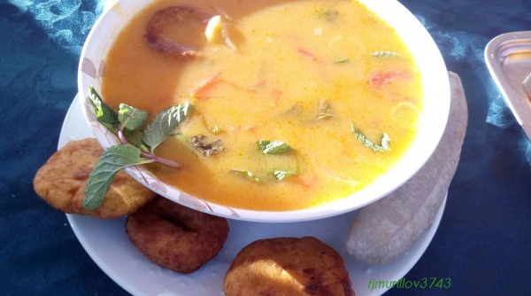

La Cuaresma
La Cuaresma dura 40 días; comienza el Miércoles de Ceniza y termina antes de la Misa de la Cena del Señor del Jueves Santo. A lo largo de este tiempo, sobre todo en la liturgia del domingo, hacemos un esfuerzo por recuperar el ritmo y estilo de verdaderos creyentes que debemos vivir como hijos de Dios.
Inicion de la Cuaresma con la procesion de las ramas
Jesus en el Monte de los Olivos
Crusifixion de Nuestro Señor: Jesucristo
Resurrección de Nuestro Señor: Jesucristo